上证指数2月1-5日行情预测？[六爻预测][原创] 再人
起卦时间：2016年01月31日17时26分起卦方式：手摇硬币起卦
立春：2016年02月04日18时00分
干支：乙未年 己丑月 壬子日 己酉时
旬空：辰巳 午未 寅卯 寅卯
六神 伏神 坎宫：水火既济
【本 卦】
白虎 ▅▅ ▅▅ 兄弟戊子水 应
滕蛇 ▅▅▅▅▅ 官鬼戊戌土
勾陈 ▅▅ ▅▅ 父母戊申金
朱雀 妻财戊午火 ▅▅▅▅▅ 兄弟己亥水 世
青龙 ▅▅ ▅▅ 官鬼己丑土
玄武 ▅▅▅▅▅ 子孙己卯木
断：1、妻财休囚日破，说明价位极低，行情已经见底（至少短线见底）之象。
2、世应皆为兄弟爻，场内场外继续看空之象。然2日为甲寅日，忌神子水届时落空无用；5日起正式运行“庚寅月”行情，忌神亥水被合化，则用神午火危而有救，可以有所表现了。
3、综合看：全周看涨。
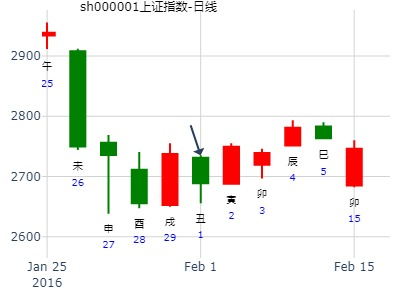
手摇300495
公历时间：2020年2月4日8时27分
干 支：己亥年 丁丑月 丁丑日 甲辰时
旬 空：辰巳 申酉 申酉 寅卯
神 煞：驿马─亥 桃花─午 日禄─午 贵人─酉，亥
坎宫：水火既济
六神 伏 神 【本 卦】
青龙 ▄▄ ▄▄ 兄弟戊子水 应
玄武 ▄▄▄▄▄ 官鬼戊戌土
白虎 ▄▄ ▄▄ 父母戊申金
螣蛇 妻财戊午火 ▄▄▄▄▄ 兄弟己亥水 世
勾陈 ▄▄ ▄▄ 官鬼己丑土
朱雀 ▄▄▄▄▄ 子孙己卯木
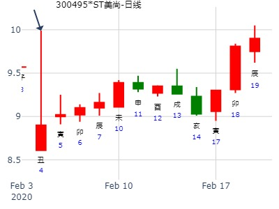
测000613大东海A2.27日收盘jw现在5.96
公历起卦时间：2020年2月27日9时59分 (电脑自动)
干支：庚子年 戊寅月 庚子日 辛巳时 （日空：辰巳）
神煞：驿马－寅 桃花－酉 日禄－申 贵人－丑，未
坎宫：水火既济
六神 伏神 本 卦
螣蛇 兄弟戊子水 ▅▅ ▅▅ 应
勾陈 官鬼戊戌土 ▅▅▅▅▅
朱雀 父母戊申金 ▅▅ ▅▅
青龙 妻财戊午火 兄弟己亥水 ▅▅▅▅▅ 世
玄武 官鬼己丑土 ▅▅ ▅▅
白虎 子孙己卯木 ▅▅▅▅▅
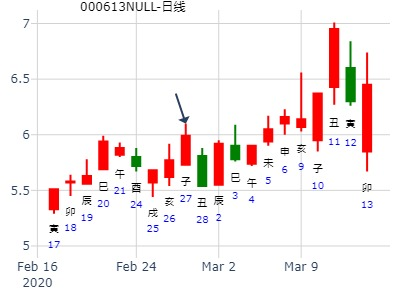
测2020.2.28上证何时底 jzx？
公历起卦时间：2020年2月28日11时32分 (电脑自动)
干支：庚子年 戊寅月 辛丑日 甲午时 （日空：辰巳）
神煞：驿马－亥 桃花－午 日禄－酉 贵人－寅，午
坎宫：水火既济
六神 伏神 本 卦
螣蛇 兄弟戊子水 ▅▅ ▅▅ 应
勾陈 官鬼戊戌土 ▅▅▅▅▅
朱雀 父母戊申金 ▅▅ ▅▅
青龙 妻财戊午火 兄弟己亥水 ▅▅▅▅▅ 世
玄武 官鬼己丑土 ▅▅ ▅▅
白虎 子孙己卯木 ▅▅▅▅▅
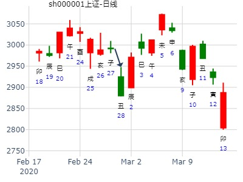
测2020.3.2甲辰日上证godsh zhx？
公历起卦时间：2020年2月29日10时56分 (电脑自动)
干支：庚子年 戊寅月 壬寅日 乙巳时 （日空：辰巳）
神煞：驿马－申 桃花－卯 日禄－亥 贵人－卯，巳
坎宫：水火既济
六神 伏神 本 卦
白虎 兄弟戊子水 ▅▅ ▅▅ 应
螣蛇 官鬼戊戌土 ▅▅▅▅▅
勾陈 父母戊申金 ▅▅ ▅▅
朱雀 妻财戊午火 兄弟己亥水 ▅▅▅▅▅ 世
青龙 官鬼己丑土 ▅▅ ▅▅
玄武 子孙己卯木 ▅▅▅▅▅
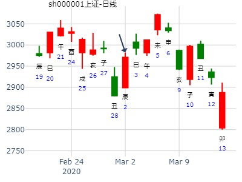
占事：上海大盘3月8日的走势 起卦方式：手动摇卦
公历时间：2007年3月7日14时41分 星期三
干支：丁亥年 癸卯月 庚子日 癸未时 (旬空：辰巳)
神煞：驿马—寅 桃花—酉 日禄—申 贵人—寅，午
坎宫：水火既济
六神 伏 神 【本 卦】
螣蛇 ▅▅ ▅▅ 兄弟戊子水 应
勾陈 ▅▅▅▅▅ 官鬼戊戌土
朱雀 ▅▅ ▅▅ 父母戊申金
青龙 妻财戊午火 ▅▅▅▅▅ 兄弟己亥水 世
玄武 ▅▅ ▅▅ 官鬼己丑土
白虎 ▅▅▅▅▅ 子孙己卯木
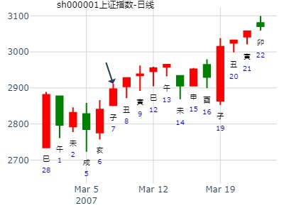
占事：江西铜业3.11戊午四-3.15壬戌一哪日顶？-
公历起卦时间：2021年3月11日14时35分 (电脑自动)
干支：辛丑年 辛卯月 戊午日 己未时 （日空：子丑）
神煞：驿马－申 桃花－卯 日禄－巳 贵人－丑，未
坎宫：水火既济
六神 伏神 本 卦
朱雀 兄弟戊子水 ▅▅ ▅▅ 应
青龙 官鬼戊戌土 ▅▅▅▅▅
玄武 父母戊申金 ▅▅ ▅▅
白虎 妻财戊午火 兄弟己亥水 ▅▅▅▅▅ 世
螣蛇 官鬼己丑土 ▅▅ ▅▅
勾陈 子孙己卯木 ▅▅▅▅▅

600380 健康元600380的入货时间
预测正确，存验一例。600380是宏泰阳理财团队推荐的个股，我看后用六爻尝试测一测：何时入货？这一例偶合一回，存验此。(黑加仑子：屡次强调000523、600380肯定是好马)600380输入的三个汉字为：康，元，机。卦语：可蓄可储 片玉寸珠 停停稳稳 前遇良图------------600380何时入货好？
公历时间：2007年3月26日14时6分 星期一
干支：丁亥年 癸卯月 己未日 辛未时 (旬空：子丑)
神煞：驿马—巳 桃花—子 日禄—午 贵人—子，申
坎宫：水火既济
六神 伏 神 【本 卦】
勾陈 ▅▅ ▅▅ 兄弟戊子水 应
朱雀 ▅▅▅▅▅ 官鬼戊戌土
青龙 ▅▅ ▅▅ 父母戊申金
玄武 妻财戊午火 ▅▅▅▅▅ 兄弟己亥水 世
白虎 ▅▅ ▅▅ 官鬼己丑土
螣蛇 ▅▅▅▅▅ 子孙己卯木
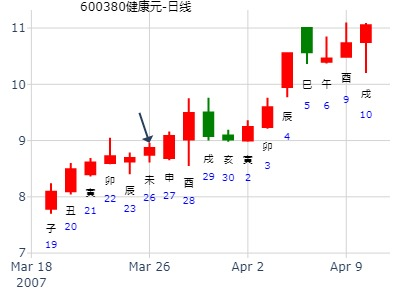
占事：国创高新002377明天涨跌
公历起卦时间：2014年3月31日15时37分 (电脑自动)
干支：甲午年 丁卯月 辛丑日 丙申时 （日空：辰巳）
神煞：驿马－亥 桃花－午 日禄－酉 贵人－寅，午
坎宫：水火既济
六神 伏神 本 卦
腾蛇 兄弟戊子水 ▅▅ ▅▅ 应
勾陈 官鬼戊戌土 ▅▅▅▅▅
朱雀 父母戊申金 ▅▅ ▅▅
青龙 妻财戊午火 兄弟己亥水 ▅▅▅▅▅ 世
玄武 官鬼己丑土 ▅▅ ▅▅
白虎 子孙己卯木 ▅▅▅▅▅
--------------------------------------------------------------------------------
《周易》——水火既济 坎上离下

盛运环保（300090）近期趋势？
水火既济静卦。yyzxh888
公历起卦时间：2016年4月11日15时7分 (在线摇卦)
干支：丙申年 壬辰月 癸亥日 庚申时 （日空：子丑）
坎宫：水火既济
六神 伏神 本 卦
白虎 兄弟戊子水 ▅▅ ▅▅ 应
腾蛇 官鬼戊戌土 ▅▅▅▅▅
勾陈 父母戊申金 ▅▅ ▅▅
朱雀 妻财戊午火 兄弟己亥水 ▅▅▅▅▅ 世
青龙 官鬼己丑土 ▅▅ ▅▅
玄武 子孙己卯木 ▅▅▅▅▅
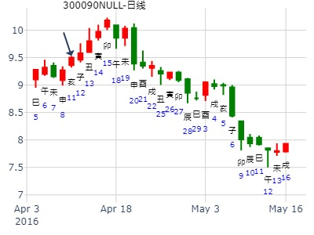
此卦无名无姓，暂时以大盘代替
起卦hour:2015年4月17日8时43分
时间: 2015-04-17
干支: 乙未年庚辰月癸亥日 (旬空: 子丑 )
既济静卦
白虎 ▅▅ ▅▅ 兄弟子水 应
腾蛇 ▅▅▅▅▅ 官鬼戌土
勾陈 ▅▅ ▅▅ 父母申金
朱雀 ▅▅▅▅▅ 兄弟亥水 世
青龙 ▅▅ ▅▅ 官鬼丑土
玄武 ▅▅▅▅▅ 子孙卯木
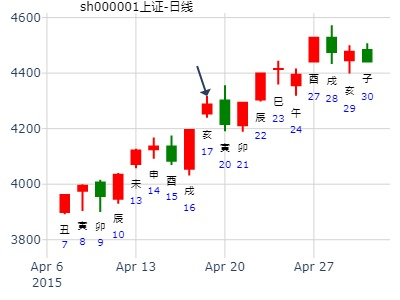
我先手摇得周卦300491
公历时间：2021年5月14日16时19分
干 支：辛丑年 癸巳月 壬戌日 戊申时
旬 空：辰巳 午未 子丑 寅卯
神 煞：驿马─申 桃花─卯 日禄─亥 贵人─巳，卯
中国预测网纳甲六爻排盘
坎宫：水火既济
六神 伏 神 【本 卦】
白虎 ▄▄ ▄▄ 兄弟戊子水 应
螣蛇 ▄▄▄▄▄ 官鬼戊戌土
勾陈 ▄▄ ▄▄ 父母戊申金
朱雀 妻财戊午火 ▄▄▄▄▄ 兄弟己亥水 世
青龙 ▄▄ ▄▄ 官鬼己丑土
玄武 ▄▄▄▄▄ 子孙己卯木
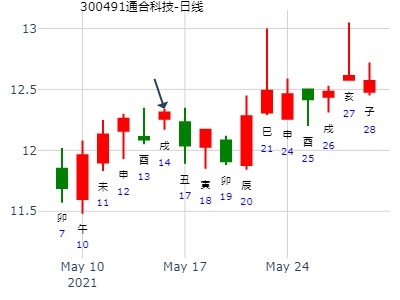
5月31至6月4日大盘预测
公历时间：2021年5月29日17时29分
干 支：辛丑年 癸巳月 丁丑日 己酉时
旬 空：辰巳 午未 申酉 寅卯
神 煞：驿马─亥 桃花─午 日禄─午 贵人─酉，亥
中国预测网纳甲六爻排盘
坎宫：水火既济
六神 伏 神 【本 卦】
青龙 ▄▄ ▄▄ 兄弟戊子水 应
玄武 ▄▄▄▄▄ 官鬼戊戌土
白虎 ▄▄ ▄▄ 父母戊申金
螣蛇 妻财戊午火 ▄▄▄▄▄ 兄弟己亥水 世
勾陈 ▄▄ ▄▄ 官鬼己丑土
朱雀 ▄▄▄▄▄ 子孙己卯木
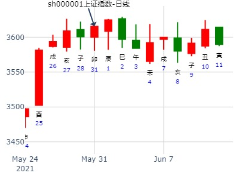
风生水起 8:06:06 上证789三个月
铜钱121-212
占事：大盘7.8.9月3个月走势
公历时间：2016年6月1日7时30分
干 支：丙申年 癸巳月 甲寅日 戊辰时
旬 空：辰巳 午未 (子丑) 戌亥
坎宫：水火既济
六神 伏 神 【本 卦】
玄武 ▄▄ ▄▄ 兄弟戊子水 应
白虎 ▄▄▄▄▄ 官鬼戊戌土
螣蛇 ▄▄ ▄▄ 父母戊申金
勾陈 妻财戊午火 ▄▄▄▄▄ 兄弟己亥水 世
朱雀 ▄▄ ▄▄ 官鬼己丑土
青龙 ▄▄▄▄▄ 子孙己卯木
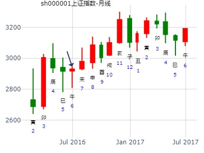
6月大盘走势
2012年 6月 4日 20时 38分 (起卦方式：手动指定)
摇了个比较有意思的6月大盘的卦象大家研究研究
干支：壬辰年 乙巳月 丙申日 戊戌时 日空亡：辰巳
神煞：驿马－寅 桃花－酉 日禄－巳 贵人－酉，亥
坎宫：水火既济
六神 伏神 本 卦
青龙 兄弟子水 ▅▅ ▅▅ 应
玄武 官鬼戌土 ▅▅▅▅▅
白虎 父母申金 ▅▅ ▅▅
螣蛇 妻财午火 兄弟亥水 ▅▅▅▅▅ 世
勾陈 官鬼丑土 ▅▅ ▅▅
朱雀 子孙卯木 ▅▅▅▅▅
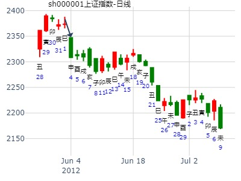
占事：占：河北钢铁000709，本周这几天涨跌？
静心，硬币，手摇卦。
公历时间：2015年6月9日6时52分
干 支：乙未年 壬午月 丙辰日 辛卯时
旬 空：辰巳 申酉 子丑 午未
神 煞：驿马─寅 桃花─酉 日禄─巳 贵人─酉，亥
坎宫：水火既济
六神 伏 神 【本 卦】
青龙 ▄▄ ▄▄ 兄弟戊子水 应
玄武 ▄▄▄▄▄ 官鬼戊戌土
白虎 ▄▄ ▄▄ 父母戊申金
螣蛇 妻财戊午火 ▄▄▄▄▄ 兄弟己亥水 世
勾陈 ▄▄ ▄▄ 官鬼己丑土
朱雀 ▄▄▄▄▄ 子孙己卯木
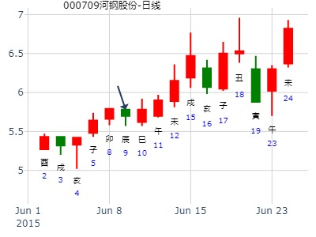
占事：Q6.15上证收盘走势？
公历起卦时间：2022年6月14日18时50分 (电脑自动)
干支：壬寅年 丙午月 戊戌日 辛酉时 （日空：辰巳）
神煞：驿马－申 桃花－卯 日禄－巳 贵人－丑，未
坎宫：水火既济
六神 伏神 本 卦
朱雀 兄弟戊子水 ▅▅ ▅▅ 应
青龙 官鬼戊戌土 ▅▅▅▅▅
玄武 父母戊申金 ▅▅ ▅▅
白虎 妻财戊午火 兄弟己亥水 ▅▅▅▅▅ 世
螣蛇 官鬼己丑土 ▅▅ ▅▅
勾陈 子孙己卯木 ▅▅▅▅▅
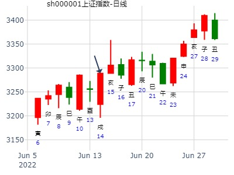
占事：六占今年上证指数还能突破5178.19继续创出新高吗？
起卦方式：手动摇卦
公历时间：2015年6月27日5时37分
干 支：乙未年 壬午月 甲戌日 丁卯时
旬 空：辰巳 申酉 申酉 戌亥
神 煞：驿马─申 桃花─卯 日禄─寅 贵人─丑，未
坎宫：水火既济
六神 伏 神 【本 卦】
玄武 ▄▄ ▄▄ 兄弟戊子水 应
白虎 ▄▄▄▄▄ 官鬼戊戌土
螣蛇 ▄▄ ▄▄ 父母戊申金
勾陈 妻财戊午火 ▄▄▄▄▄ 兄弟己亥水 世
朱雀 ▄▄ ▄▄ 官鬼己丑土
青龙 ▄▄▄▄▄ 子孙己卯木
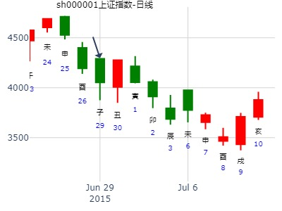
主题：下周上海大盘走向？
丁亥 丙午 丙申 癸巳 (辰巳空)
丁亥年五月十七(2007/07/01 09:50:34)
水火既济
青龙 兄弟子水 ∥ 应
玄武 官鬼戌土 ／
白虎 父母申金 ∥ 妻财午火：腾蛇 兄弟亥水
勾陈 官鬼丑土 ∥
朱雀 子孙卯木 ／
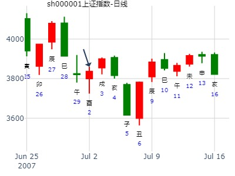
上证指数，明天行情涨跌如何（8月21日）dilinlinlin?
公历时间：2015年8月20日16时0分
干 支：乙未年 甲申月 戊辰日 庚申时
旬 空：辰巳? ?午未? ?(戌亥)? ?子丑??
坎宫：水火既济
六神? 伏 神 【本 卦】
朱雀 ▄▄??▄▄ 兄弟戊子水 应
青龙 ▄▄▄▄▄ 官鬼戊戌土
玄武 ▄▄??▄▄ 父母戊申金
白虎 妻财戊午火 ▄▄▄▄▄ 兄弟己亥水 世
螣蛇 ▄▄??▄▄ 官鬼己丑土
勾陈 ▄▄▄▄▄ 子孙己卯木
明天将会上涨。盘中可能会出现探底回升，最终是收涨。
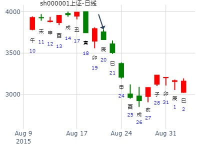
既济静卦,中国平安到春节年卦
时间: 2022-8-31
干支: 壬寅年戊申月丙辰日 (旬空: 子丑 )
既济静卦
六神 伏神 本 卦
青龙 ▅▅ ▅▅ 兄弟子水 应
玄武 ▅▅▅▅▅ 官鬼戌土
白虎 ▅▅ ▅▅ 父母申金
腾蛇 妻财午火▅▅▅▅▅ 兄弟亥水 世
勾陈 ▅▅ ▅▅ 官鬼丑土
朱雀 ▅▅▅▅▅ 子孙卯木
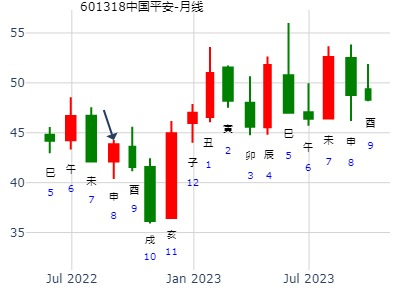
姓名：招财公主 钱币卦
占事：600635未来一年走势？
公历时间：2014年9月24日10时39分
干 支：甲午年 癸酉月 戊戌日 丁巳时 (辰巳)
坎宫：水火既济
六神 伏 神 【本 卦】
朱雀 ▄▄ ▄▄ 兄弟戊子水 应
青龙 ▄▄▄▄▄ 官鬼戊戌土
玄武 ▄▄ ▄▄ 父母戊申金
白虎 妻财戊午火 ▄▄▄▄▄ 兄弟己亥水 世
螣蛇 ▄▄ ▄▄ 官鬼己丑土
勾陈 ▄▄▄▄▄ 子孙己卯木
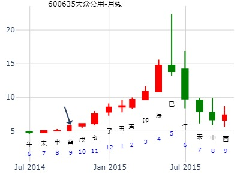
占事：10月22-26日大盘涨跌
公历时间：2007年10月19日15时18分 星期五
干支：丁亥年 庚戌月 丙戌日 丙申时 (旬空：午未)
神煞：驿马—申 桃花—卯 日禄—巳 贵人—酉，亥
坎宫：水火既济
六神 伏 神 【本 卦】
青龙 ▅▅ ▅▅ 兄弟戊子水 应
玄武 ▅▅▅▅▅ 官鬼戊戌土
白虎 ▅▅ ▅▅ 父母戊申金
螣蛇 妻财戊午火 ▅▅▅▅▅ 兄弟己亥水 世
勾陈 ▅▅ ▅▅ 官鬼己丑土
朱雀 ▅▅▅▅▅ 子孙己卯木
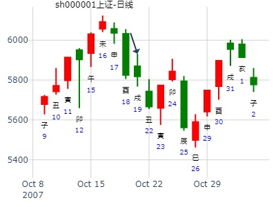
第十六期上证指数预测１１月１０－１４日比赛
公历时间：2008年11月10日9时30分 星期一
干支：戊子年 癸亥月 甲寅日 己巳时 (旬空：子丑)
神煞：驿马—申 桃花—卯 日禄—寅 贵人—丑，未
坎宫：水火既济
六神 伏 神 【本 卦】
玄武 ▅▅ ▅▅ 兄弟戊子水 应
白虎 ▅▅▅▅▅ 官鬼戊戌土
螣蛇 ▅▅ ▅▅ 父母戊申金
勾陈 妻财戊午火 ▅▅▅▅▅ 兄弟己亥水 世
朱雀 ▅▅ ▅▅ 官鬼己丑土
青龙 ▅▅▅▅▅ 子孙己卯木
这是大盘日K线的静卦！
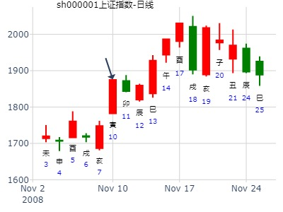
测11.16 酉日大盘
公历起卦时间：2022年11月15日10时49分 (电脑自动)
干支：壬寅年 辛亥月 壬申日 乙巳时 （日空：戌亥）
坎宫：水火既济
六神 伏神 本 卦
白虎 兄弟戊子水 ▅▅ ▅▅ 应
螣蛇 官鬼戊戌土 ▅▅▅▅▅
勾陈 父母戊申金 ▅▅ ▅▅
朱雀 妻财戊午火 兄弟己亥水 ▅▅▅▅▅ 世
青龙 官鬼己丑土 ▅▅ ▅▅
玄武 子孙己卯木 ▅▅▅▅▅
申日涨，父临日，消息引起的涨。明天子孙空方暗动， 跌。
3119.98-14.10
-0.45%
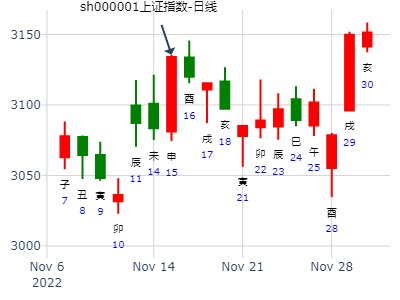
占事：000096广聚能源下周涨跌
公历起卦时间：2013年11月29日18时10分 (电脑自动)
干支：癸巳年 癸亥月 己亥日 癸酉时 （日空：辰巳）
神煞：驿马－巳 桃花－子 日禄－午 贵人－子，申
坎宫：水火既济
六神 伏神 本 卦
勾陈 兄弟戊子水 ▅▅ ▅▅ 应
朱雀 官鬼戊戌土 ▅▅▅▅▅
青龙 父母戊申金 ▅▅ ▅▅
玄武 妻财戊午火 兄弟己亥水 ▅▅▅▅▅ 世
白虎 官鬼己丑土 ▅▅ ▅▅
腾蛇 子孙己卯木 ▅▅▅▅▅
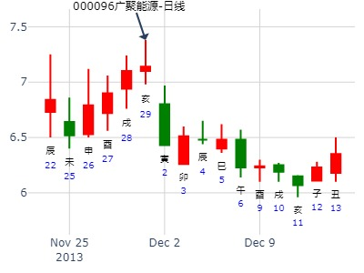
占事: 12月大盘会不会有行情？
兄弟持世，跌。但既济又是最后一跌。
时间: 2018-12-10
干支: 戊戌年甲子月丙子日 (旬空: 申酉 )
既济静卦
六神 伏神 本 卦
青龙 ▅▅ ▅▅ 兄弟子水 应
玄武 ▅▅▅▅▅ 官鬼戌土
白虎 ▅▅ ▅▅ 父母申金
腾蛇 妻财午火▅▅▅▅▅ 兄弟亥水 世
勾陈 ▅▅ ▅▅ 官鬼丑土
朱雀 ▅▅▅▅▅ 子孙卯木
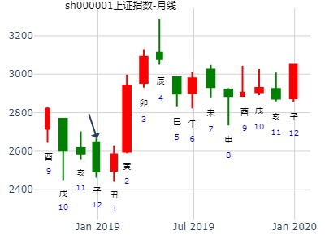 
占事：云南铜业下周走势？
起卦时间：2015年12月11日15时2分 (在线摇卦)
干支：乙未年 戊子月 辛酉日 丙申时 （日空：子丑）
坎宫：水火既济 坎宫：水火既济
六神 伏神 本 卦 变 卦
腾蛇 兄弟戊子水 ▅▅ ▅▅ 应 兄弟戊子水 ▅▅ ▅▅ 应
勾陈 官鬼戊戌土 ▅▅▅▅▅ 官鬼戊戌土 ▅▅▅▅▅
朱雀 父母戊申金 ▅▅ ▅▅ 父母戊申金 ▅▅ ▅▅
青龙 妻财戊午火 兄弟己亥水 ▅▅▅▅▅ 世 兄弟己亥水 ▅▅▅▅▅ 世
玄武 官鬼己丑土 ▅▅ ▅▅ 官鬼己丑土 ▅▅ ▅▅
白虎 子孙己卯木 ▅▅▅▅▅ 子孙己卯木 ▅▅▅▅▅
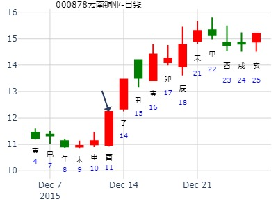
试测12.20上证收盘个位数？-ayn
公历起卦时间：2021年12月18日13时18分 (电脑自动)
干支：辛丑年 庚子月 庚子日 癸未时 （日空：辰巳）
神煞：驿马－寅 桃花－酉 日禄－申 贵人－丑，未
坎宫：水火既济
六神 伏神 本 卦
螣蛇 兄弟戊子水 ▅▅ ▅▅ 应
勾陈 官鬼戊戌土 ▅▅▅▅▅
朱雀 父母戊申金 ▅▅ ▅▅
青龙 妻财戊午火 兄弟己亥水 ▅▅▅▅▅ 世
玄武 官鬼己丑土 ▅▅ ▅▅
白虎 子孙己卯木 ▅▅▅▅▅
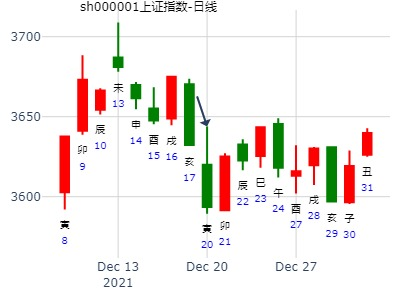